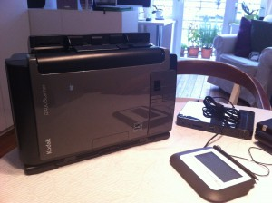
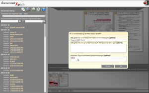
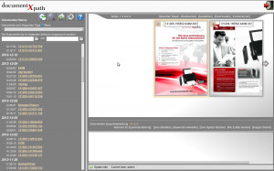

Mrs. Paperless testet das documentXpath
documentXpath – das perfekte Archivierungssystem?
Heute widme ich mich einem Thema, auf das ich nach verschiedenen Apotheken-Besuchen gestoßen bin. Fällt Ihnen auch seit geraumer Zeit auf, dass Ihre Rezepte schwuppdiwupp eingescannt werden und dies mal kürzer, mal länger dauert? Als Professional Organizer verbinde ich dieses Vorgehen natürlich gleich mit den Gedanken an moderne Archivierungssysteme. Aber wie einfach und sicher sind diese Systeme inzwischen?
Als Beispiel dient mir im Folgenden mein Test des neuen documentXpath. Erst im Frühjahr 2013 auf den Markt gekommen und bereits mehrfach ausgezeichnet (u.a. der Idee-Voraus-Preis), gilt es als günstiges und einfach zu benutzendes Produkt. Ob ich das wohl bestätigen kann?
documentXpath wurde von den Herren Dipl.-Ing. Vagharshak Lalayan und Dipl.-Kfm. Uwe Griebenow für den kleinen Mittelstand, Freiberufler und Gewerbetreibende entwickelt. Sie wollten das Thema Dokumentenarchivierung sozusagen revolutionieren. Statt wie bisher Briefe, Rechnungen, Verträge usw. zu kategorisieren, verschlagworten und unter bestimmten Ordnern und Dateinamen abzulegen, verfolgten sie einen komplett anderen Ansatz:
- Dokumente werden, so wie sie sind, gescannt und gespeichert.
- Eine völlig neue und selbst entwickelte Lösung mit Volltextsuche (OCR) ermöglicht dem Benutzer, sein archiviertes Dokument innerhalb von Sekunden wiederzufinden – ganz ähnlich wie beim Suchen mit einer Suchmaschine.
Wie Sie sich denken können, investierten die Herren mehrere Mannjahre in die Entwicklungs- und Programmierarbeit. Auch wenn der Hersteller des Archivierungssystems noch nicht so bekannt ist, finde ich die Idee und Umsetzung super. Übrigens wurde auf hohe Qualität geachtet und so sind die verwendeten Komponenten von namhaften Herstellern.
Nun aber zum Ergebnis der Entwicklung, dem documentXpath.
Archivierungssystem wird als einfaches homogenes Paket angeboten

Geliefert wird ein Scanner von Kodak, eine Festplatte (kleinstes Modell mit ½ Terrabyte Größe) und ein Steuerungs- bzw. Bedienpad.- Diese 500 GB sind alles andere als wenig, sie passen für 2 Millionen gescannte Dokumente!
- Der Scanner bietet: Doppelseitenerkennung, Aussortieren von Leerseiten, Ausrichtung der Textdokumente.
Größere Scanner und mehr Speicherplatz sind ebenfalls erhältlich. - Die Steuerung erfolgt über das Pad, das ein umprogrammiertes Signaturpad ist.
- In der Festplattenbox ist auch das Betriebssystem untergebracht.
Aufbau des Systems
- Einfach, da nur Scanner, Box und Pad an Strom sowie LAN oder WLAN angeschlossen werden müssen.
- Die Box erkennt LAN relativ schnell, die Bestätigung erfolgt auf dem Bedienpad.
- Sie agiert wie ein Webserver und wie eine eigene Cloud. So erreichen Sie sie von jedem Computer überall auf der Welt aus.
Umgang mit dem Archivierungssystem
Zwei Möglichkeiten, um zu scannen:
- alle Dokumente vorsortieren und einzeln stapelweise scannen und nach dem scannen benennen
- oder scannen und dann und automatisch benennen lassen
Nach dem Scannen:

Dateien in der Vorschau öffnen und Seiten zusammenfügen (gelingt sehr einfach).- Um bestimmte Seiten direkt aus dem Programm heraus zu versenden, diese einfach extrahieren.
- Oder nur neu abheften.
- Dateien und Seiten werden nicht neu sortiert, sondern nur die Metadaten im Hintergrund verknüpft.
- Über das Bedienpad lassen sich übrigens bestimmte Profile einrichten, z.B. „Buchhaltung“.
Großes Plus – die Suche:

Selbstverständlich ist das System mit OCR-Software (Optical Character Regocnition) ausgestattet.- Die Textsuche ist sehr genau. Sie können aber auch Tags anlegen und verwenden.
- Die Volltextsuche ist über Keywörter erweiterbar.
- Über Tags und Keywörter können Sie sich auch eine Art virtuelle Ordnerstruktur aufbauen.
- Bei der Suche wird nicht nur das Dokument angegeben, in dem sich das gesuchte Wort befindet, sondern genau die Seite mit diesem Wort angezeigt. (Das finde ich besonders cool) 😉
Weitere Hinweise
- Da das System wie eine Cloud funktioniert, können Sie z.B. auch Ihrem Steuerberater Zugriff gewähren.
- Dieser wählt sich über die IP-Adresse ein und hat dann Zugriff auf die Belege.
- Natürlich erfolgt diese Verbindung über einen sicheren SSH-Tunnel und ist somit verschlüsselt.
- Sie können sogar Ihre tiff- oder pdf-Dateien aus Ihrem bestehenden System hochladen.
- Auch wenn Erfahrungswerte der meisten Unternehmen bestätigen, dass 80 bis 90 Prozent der abgelegten Dokumente nicht wieder benötigt werden, können Sie die gescannten Dokumente noch bearbeiten.
- Preis des kleinsten Modelles: 2.990,-€ netto, einmalig, keine Lizenzgebühr oder ähnliches.
Mein Fazit
Nach meinem umfassenden Test bin ich begeistert. Das documentXpath ist ein sehr einfaches und sicheres Archivierungssystem. Einfach u.a., da ich als Anwender nichts extra installieren muss, das System selbsterklärend ist. Damit finde ich es zusätzlich sehr geeignet für nicht-computeraffine Menschen. Sicher, denn die Speicherung im PDF/A-Format genügt den Vorschriften der revisionssicheren Archivierung.
Das System besticht durch Schnelligkeit des Scanners und beim Zugriff auf die Dateien. Und: Für das reine Scannen benötigen Sie noch nicht einmal einen Computer.
Vor allem ist es interessant für kleine und mittlere Unternehmen, für die eines der herkömmlichen Datenmanagement-Systeme überdimensioniert und zu kompliziert wären. Ich empfehle DocumentxPath auch für Unternehmen, die neben steuerrechtlichen Aufbewahrungspflichten weitere Aufbewahrungspflichten erfüllen müssen.
Eine Herausforderung für den Nutzer ist sicherlich der Schritt weg von der gewohnten Ordnerstruktur. Bedenken Sie aber, dass wir die meisten elektronischen Dokumente ohnehin nie wieder benutzen! Meiner Einschätzung nach ist es einen Versuch wert, sich auf diese Arbeitsweise einzulassen. Vor allem, wenn Sie mit vielen zu archivierenden Dokumenten zu tun haben.
Weitere Artikel

Digitale Tools für Zusammenarbeit im Office
E-Mail, Digitale Ablage und eine Branchensoftware sind schon lange nicht mehr genug für effiziente Zusammenarbeit. Doch bevor Sie sich in einem Dschungel an digitalen Werkzeugen verlieren, sollten Sie sich über die Systematik …

Veränderung braucht Gewohnheit
Sowohl im Berufs-als auch im Privatleben sind wir ständig im Veränderungsmodus. Manche Veränderungen wollen wir umsetzen, manche müssen wir mitmachen. Wir alles wissen, dass Veränderung nie leicht sind und je länger wir etwas auf …